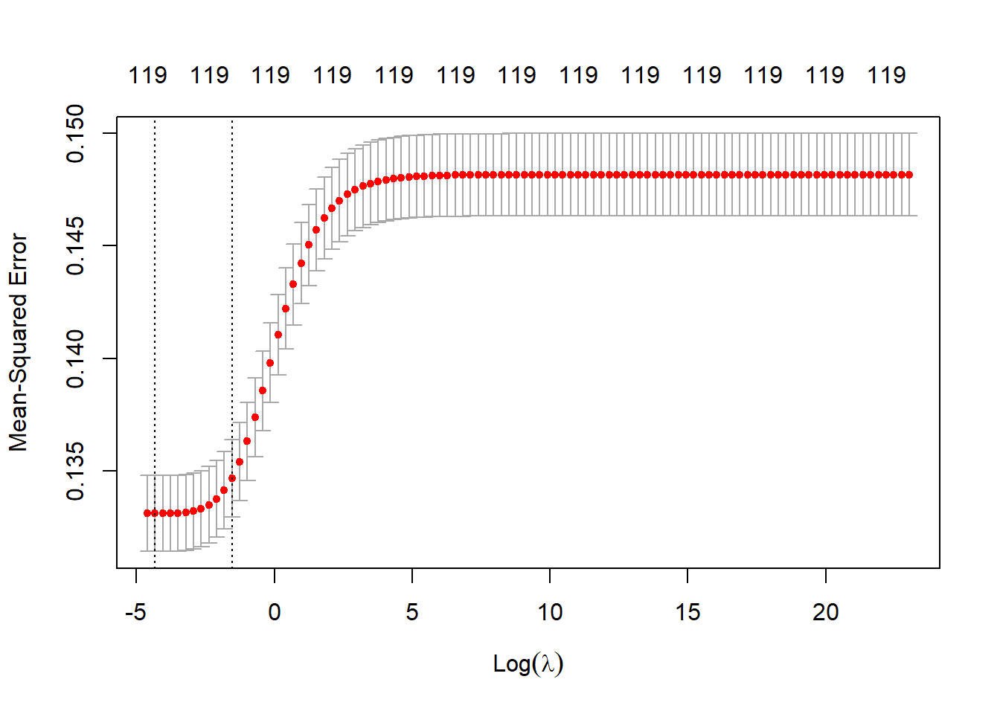

United States Car Accident Project
1 Indroduction
1.1 Motivation for the Project - James
1.2 Research Questions -James
1.3 Overview of Modeling Techniques - Me
Binary Response Model
Linear Regression
Lasso Regression
Ridge Regression
Ordinal Logit Regression
Decision Tree
Random Forest
Artificial Neural Network
2 Raw Data
2.1 Preparing Data For Machine Learning
accident_12var <- accident_raw %>%
select(Severity,State, `Temperature(F)`, `Humidity(%)`, `Visibility(mi)`, `Wind_Speed(mph)`, Weather_Condition, `Precipitation(in)`, Crossing, Junction, Traffic_Signal, Sunrise_Sunset)
colnames(accident_12var) <- gsub("\\)|\\%|\\(", ".", colnames(accident_12var))library(caret)
library(recipes)
library(dplyr)
# Split the data into training and testing sets
set.seed(2)
train_indices <- createDataPartition(accident_12var$Severity, p = 0.8, list = FALSE)
train_set <- accident_12var[train_indices, ]
test_set <- accident_12var[-train_indices, ]
# TRAIN SET
# Make a copy of the train set
copied_traindata <- data.frame(train_set)
# Add an id column to copied_traindata
copied_traindata <- copied_traindata %>% mutate(id = row_number())
# Separate Label from Feature
accident <- select(copied_traindata, -Severity) # drop Severity column
label <- copied_traindata$Severity # select Severity column
# Separate Numerical from Categorical
accident_num <- accident %>%
select(id, Temperature.F., Humidity..., Visibility.mi., Wind_Speed.mph., Precipitation.in.)
accident_cat <- accident %>%
select(id, State, Weather_Condition, Crossing, Junction, Traffic_Signal, Sunrise_Sunset)
# Define numeric and categorical attributes
num_attribs <- names(accident_num)[2:6]
cat_attribs <- names(accident_cat)[2:7]
# Define preprocessing pipelines
num_pipeline <- recipe(~., data = accident_num) %>%
step_impute_median(all_numeric(), -has_role("id")) %>%
step_center(all_numeric(), -has_role("id")) %>%
step_scale(all_numeric(), -has_role("id"))
cat_pipeline <- recipe(~., data = accident_cat) %>%
step_dummy(all_nominal())
# Merge the preprocessed numerical and categorical features into a single dataset
accident <- accident %>% rename(Index = id)
df1 <- mutate(num_pipeline %>% prep() %>% bake(new_data = NULL), join_key = "Index")
df2 <- mutate(cat_pipeline %>% prep() %>% bake(new_data = NULL), join_key = "Index")
accident_prepared <- accident %>%
select(-one_of(c(cat_attribs, num_attribs)))
accident_prepared <- cbind(accident_prepared, df1,df2)
accident_prepared <- accident_prepared %>%
distinct()
accident_prepared <- select(accident_prepared, -c("Index", "id", "join_key", "id.1", "join_key.1"))
#TEST SET
# Make a copy of the test set
copied_testdata <- data.frame(test_set)
# Add an id column to copied_testdata
copied_testdata <- copied_testdata %>% mutate(id = row_number())
# Separate Label from Feature
accident_test <- select(copied_testdata, -Severity) # drop Severity column
label_test <- copied_testdata$Severity # select Severity column
# Separate Numerical from Categorical
accident_num_test <- copied_testdata %>%
select(Temperature.F., Humidity..., Visibility.mi., Wind_Speed.mph., Precipitation.in.)
accident_cat_test <- copied_testdata %>%
select(State, Weather_Condition, Crossing, Junction, Traffic_Signal, Sunrise_Sunset)
# Define numeric and categorical attributes
num_attribs <- names(accident_num_test)[1:6]
cat_attribs <- names(accident_cat_test)[1:7]
# Define preprocessing pipelines
num_pipeline <- recipe(~., data = accident_num_test) %>%
step_impute_median(all_numeric(), -has_role("id")) %>%
step_center(all_numeric(), -has_role("id")) %>%
step_scale(all_numeric(), -has_role("id"))
cat_pipeline <- recipe(~., data = accident_cat_test) %>%
step_dummy(all_nominal())
# Merge the preprocessed numerical and categorical features into a single dataset
copied_testdata <- copied_testdata %>% rename(Index = id)
df1 <- mutate(num_pipeline %>% prep() %>% bake(new_data = NULL), join_key = "Index")
df2 <- mutate(cat_pipeline %>% prep() %>% bake(new_data = NULL), join_key = "Index")
accident_prepared_test <- accident_test %>%
select(-one_of(c(cat_attribs, num_attribs)))
accident_prepared_test <- cbind(accident_prepared_test, df1,df2)
accident_prepared_test <- accident_prepared_test %>%
distinct()
accident_prepared_test <- select(accident_prepared_test, -c("id", "join_key", "join_key.1"))
accident_prepared_test$Weather_Condition_Blowing.Dust...Windy <- 0
accident_prepared_test$Weather_Condition_Clear <- 0
accident_prepared_test$Weather_Condition_Blowing.Snow...Windy <- 0
accident_prepared_test$Weather_Condition_Freezing.Drizzle <- 0
accident_prepared_test$Weather_Condition_Heavy.Drizzle <- 0
accident_prepared_test$Weather_Condition_Heavy.Sleet <- 0
accident_prepared_test$Weather_Condition_Heavy.Snow...Windy <- 0
accident_prepared_test$Weather_Condition_Light.Freezing.Rain...Windy <- 0
accident_prepared_test$Weather_Condition_Light.Ice.Pellets <- 0
accident_prepared_test$Weather_Condition_Light.Thunderstorms.and.Rain <- 0
accident_prepared_test$Weather_Condition_Sleet <- 0
accident_prepared_test$Weather_Condition_Thunder...Wintry.Mix <- 0
accident_prepared_test$Weather_Condition_Smoke...Windy <- 0
accident_prepared_test$Weather_Condition_Thunder.and.Hail <- 0
accident_prepared_test$Weather_Condition_Widespread.Dust <- 0
accident_prepared_test$Weather_Condition_Widespread.Dust...Windy <- 0
accident_prepared_test$Weather_Condition_Light.Snow.Shower <- 0
accident_prepared_test$Weather_Condition_Widespread.Dust...Windy <- 0
accident_prepared_test$Weather_Condition_Widespread.Dust...Windy <- 0
accident_prepared_test$Weather_Condition_Widespread.Dust...Windy <- 0
accident_prepared_test$Weather_Condition_Widespread.Dust...Windy <- 03 Models (Make linear, ridge, lasso, random forest using every variable before using the 11 variables for everything) -Both?
3.1 Linear Regression
# Fit the linear regression model
lin_reg <- lm(label ~ ., data = accident_prepared)
# Use the model to predict the response variable using the test data
y_pred <- predict(lin_reg, newdata = accident_prepared_test)
# Calculate the residuals
residuals <- y_pred - label_test
# Calculate the squared errors
squared_errors <- residuals^2
# Calculate the mean squared error
mse <- mean(squared_errors)
# Print the MSE
cat("MSE:", mse)
## MSE: 0.13249143.2 Ridge Regression
#ridge regression
library(glmnet)
# Separate the predictor variables from the response variable
y <- label
X <- as.matrix(select(accident_prepared, -label))
# Define the lambda sequence for ridge regression
lambda_seq <- 10^seq(10, -2, length = 100)
# Perform cross-validated ridge regression
ridge_fit <- cv.glmnet(X, y, alpha = 0, lambda = lambda_seq)
# Plot the cross-validation results
plot(ridge_fit)
ridge_coef <- coef(ridge_fit)[-1]
y_pred <- predict(ridge_fit, newx = X)
mse <- mean((y - y_pred)^2)
# Print the MSE
cat("MSE:", mse)
## MSE: 0.13411023.3 Lasso Regression
x <- model.matrix(~ ., data = accident_prepared)
y <- label
# Fit a Lasso regression with cross-validation
lasso_model <- cv.glmnet(x, y, alpha = 1)
extra_columns <- setdiff(colnames(accident_prepared_test), colnames(accident_prepared))
accident_prepared_test <- accident_prepared_test %>%
select(-one_of(extra_columns))
# Predict the response variable using the test data
x_test <- model.matrix(~ ., data = accident_prepared_test)
y_pred <- predict(lasso_model, newx = x_test)
# Calculate the MSE
mse <- mean((y_pred - label_test)^2)
# Print the MSE
cat("MSE:", mse)
## MSE: 0.134835
plot(lasso_model)
4 Results
#Linear Regression Results
library(coefplot)
library(broom)
# Extract coefficients and standard errors
coef_df <- tidy(lin_reg, conf.int = TRUE)
# Filter out intercept
coef_df <- coef_df[-1,]
num_coef_df <- coef_df[coef_df$term %in% num_attribs,]
cat_coef_df <- coef_df[grep(".*\\_.*", coef_df$term), ]
# Create plots
plot_num <- ggplot(num_coef_df, aes(x = estimate, y = reorder(term, estimate))) +
geom_point(size = 2) +
geom_errorbarh(aes(xmin = conf.low, xmax = conf.high)) +
labs(x = "Coefficient Estimate", y = "Variable") +
ggtitle("Linear Regression Results for Numeric Variables") +
theme_minimal() +
theme(plot.title = element_text(hjust = 0.5))+
geom_vline(xintercept = 0, linetype = "dashed", color = "red")
plot_num
cat_coef_df1 <- cat_coef_df[1:25,]
cat_coef_df2 <- cat_coef_df[25:50,]
cat_coef_df3 <- cat_coef_df[50:75,]
cat_coef_df4 <- cat_coef_df[75:100,]
cat_coef_df5 <- cat_coef_df[100:125,]
# Create separate plots
plot_cat1 <- ggplot(cat_coef_df1, aes(x = estimate, y = reorder(term, estimate))) +
geom_point(size = 2) +
geom_errorbarh(aes(xmin = conf.low, xmax = conf.high)) +
labs(x = "Coefficient Estimate", y = "Variable") +
ggtitle("Linear Regression Results for State Variables (Part 1)") +
theme_minimal() +
theme(plot.title = element_text(hjust = 0.5))+
geom_vline(xintercept = 0, linetype = "dashed", color = "red")
plot_cat1
plot_cat2 <- ggplot(cat_coef_df2, aes(x = estimate, y = reorder(term, estimate))) +
geom_point(size = 2) +
geom_errorbarh(aes(xmin = conf.low, xmax = conf.high)) +
labs(x = "Coefficient Estimate", y = "Variable") +
ggtitle("Linear Regression Results for State Variables (Part 2)") +
theme_minimal() +
theme(plot.title = element_text(hjust = 0.5))+
geom_vline(xintercept = 0, linetype = "dashed", color = "red")
plot_cat2
plot_cat3 <- ggplot(cat_coef_df3, aes(x = estimate, y = reorder(term, estimate))) +
geom_point(size = 2) +
geom_errorbarh(aes(xmin = conf.low, xmax = conf.high)) +
labs(x = "Coefficient Estimate", y = "Variable") +
ggtitle("Linear Regression Results for Categorical Variables") +
theme_minimal() +
theme(plot.title = element_text(hjust = 0.5))+
geom_vline(xintercept = 0, linetype = "dashed", color = "red")
plot_cat3
plot_cat4 <- ggplot(cat_coef_df4, aes(x = estimate, y = reorder(term, estimate))) +
geom_point(size = 2) +
geom_errorbarh(aes(xmin = conf.low, xmax = conf.high)) +
labs(x = "Coefficient Estimate", y = "Variable") +
ggtitle("Linear Regression Results for Categorical Variables (Part 2)") +
theme_minimal() +
theme(plot.title = element_text(hjust = 0.5))+
geom_vline(xintercept = 0, linetype = "dashed", color = "red")
plot_cat4
plot_cat5 <- ggplot(cat_coef_df5, aes(x = estimate, y = reorder(term, estimate))) +
geom_point(size = 2) +
geom_errorbarh(aes(xmin = conf.low, xmax = conf.high)) +
labs(x = "Coefficient Estimate", y = "Variable") +
ggtitle("Linear Regression Results for Categorical Variables (Part 3)") +
theme_minimal() +
theme(plot.title = element_text(hjust = 0.5))+
geom_vline(xintercept = 0, linetype = "dashed", color = "red")
plot_cat5